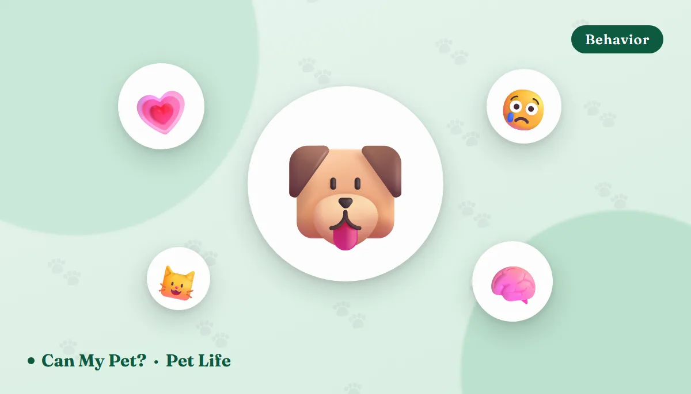

Can Pets Sense Emotions? What Dogs & Cats Actually Pick Up On

You've had the moment. A bad phone call, a hard day, a quiet cry in the kitchen — and suddenly there's a chin on your knee, or a cat who has silently relocated to the arm of your chair. Owners have described this for as long as we've kept pets, and for a long time science mostly shrugged at it. That's changed. Over the last decade, researchers have run some genuinely clever experiments on how dogs and cats detect human emotion, and the results are more literal than most people expect. Your dog may not understand why you're upset. But there's good evidence it can smell that you are.
Dogs can smell your stress — and it changes their decisions
This is the finding that surprises people most. In a 2024 study published in Scientific Reports, researchers at the University of Bristol collected breath and sweat samples from people in a relaxed state and in a stressed state, then presented those odors to dogs during a cognitive bias test — a standard way of measuring whether an animal is feeling optimistic or pessimistic.
The dogs were trained to expect food in one bowl location and no food in another, then offered an ambiguous bowl somewhere in between. When the room smelled of a stressed human, dogs were noticeably slower to approach that ambiguous bowl. In plain language: the smell of someone else's stress made them expect a worse outcome. And critically, the odor samples came from strangers the dogs had never met.
Earlier work found something similar with fear specifically. Dogs exposed to sweat collected from frightened people showed more stress-related behavior and sought out their owners more than dogs smelling samples from happy people, whose behavior tilted toward curiosity about the stranger instead.
Dogs also read faces and voices — together
Scent isn't the only channel. In a well-known experiment at the University of Lincoln, dogs were shown a human face expressing an emotion while a vocalization played — sometimes matching the expression, sometimes not. Dogs looked significantly longer at the face when the expression and the sound matched, which suggests they weren't just reacting to a cue but forming an integrated impression of the emotion behind it. That kind of cross-modal recognition had previously only been demonstrated in humans and a few primates.
Day to day, this shows up as the thing every owner notices: dogs respond to tone far more than words, freeze when the house goes tense, and appear at your side when you cry. It's also why the same sentence delivered warmly and coldly produces two completely different dogs.
What about cats?
Cats get unfairly written off here, mostly because their response to your emotions is quieter than a Labrador's. The research says otherwise.
👀 They check your face before deciding
In a social referencing study, cats were shown an unfamiliar, slightly unsettling object while their owner reacted either calmly or with alarm. Around 79% of cats looked back and forth between the object and the owner's face — and then adjusted their own behavior to match the owner's reaction.
😊 They respond differently to happy owners
Cats have been shown to behave more positively — more rubbing, more time in the same space, more relaxed posture — toward owners displaying happy facial and body signals than angry ones.
🧬 They may absorb your stress long-term
Research on cat–owner pairs has found associations between owner personality and traits like anxiety and aggression in the cat. Living with chronic tension appears to leave a mark on cats the same way it does on dogs.
Is it empathy, or something simpler?
Here's where it's worth being careful. Most behavior researchers describe what pets are doing as emotional contagion — the automatic catching of another individual's emotional state, which is considered a building block of empathy rather than empathy itself. True empathy requires recognizing that the feeling belongs to someone else and responding to their need, and that's hard to prove in animals.
That distinction doesn't make the comfort less real. It does mean your dog leaning on you during a panic attack may be soothing itself as much as you — and both of you benefit. It also means an anxious household genuinely can create an anxious pet, which is a more actionable takeaway than "my dog loves me."
Can pets sense illness, pregnancy or grief?
Partly. Trained detection dogs can identify certain cancers, seizures and blood sugar crashes by scent with real accuracy, so it's plausible that untrained pets notice something when a person's body chemistry shifts. What they can't do is interpret it. A dog that suddenly won't leave a family member's side is worth paying attention to as a prompt to get checked out — not as a diagnosis.
Grief is similar. Pets clearly register the absence of a person and the change in household mood, and many show appetite or sleep changes after a loss. Whether they understand death is a genuinely open question. What we do know is they notice we're different.
Frequently asked questions
Can dogs really smell human emotions?
Research suggests they detect the chemical signature of some emotional states. Dogs exposed to sweat from frightened strangers showed more stress behavior and more owner-seeking than dogs smelling samples from happy people, and the smell of a stressed person made dogs more pessimistic in a decision-making test.
Do cats notice when you're sad?
Evidence says yes. In social referencing tests, most cats looked between an unfamiliar object and their owner's face, then adjusted their own behavior to match the owner's emotional reaction. Cats also behave more positively toward owners showing happy signals than angry ones.
Can my stress affect my pet's behavior?
It appears to. Odor from a stressed human shifted dogs toward more pessimistic choices in a controlled study, and owner personality and household tension have been linked to anxiety and behavior problems in both dogs and cats.
Is it empathy or emotional contagion?
Most researchers call it emotional contagion — catching your emotional state automatically — rather than full empathy, which requires understanding the feeling belongs to someone else. It's simpler than it looks, but very real.
Sources: University of Bristol cognitive bias research published in Scientific Reports (2024), human fear chemosignal studies in Animal Cognition and Frontiers in Veterinary Science, University of Lincoln cross-modal emotion recognition research, and social referencing work on cat–human communication in Animal Cognition, plus ASPCA and AKC behavior guidance. For information only — not veterinary or behavioral advice. If your pet's behavior has changed suddenly, talk to your vet.